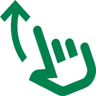
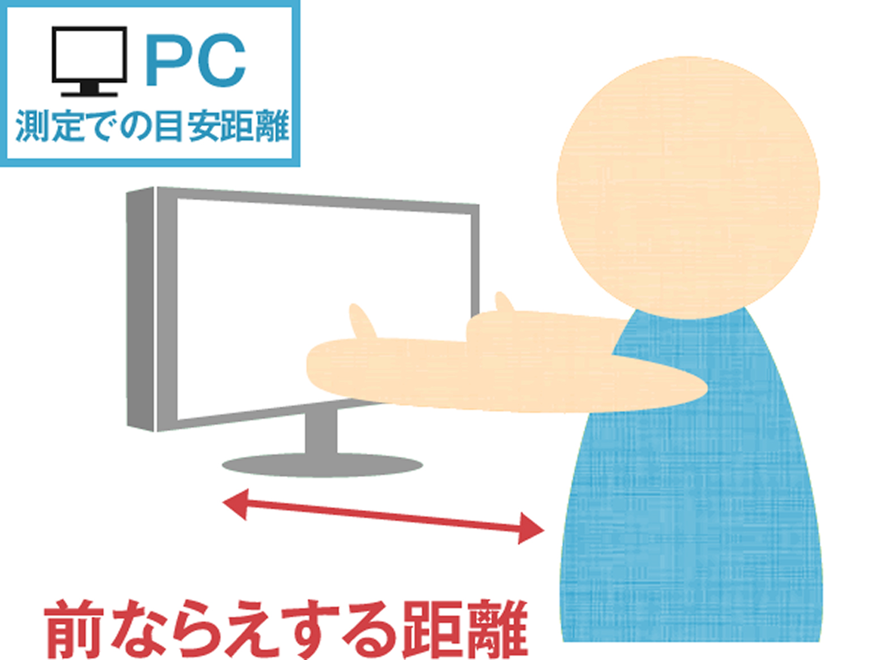
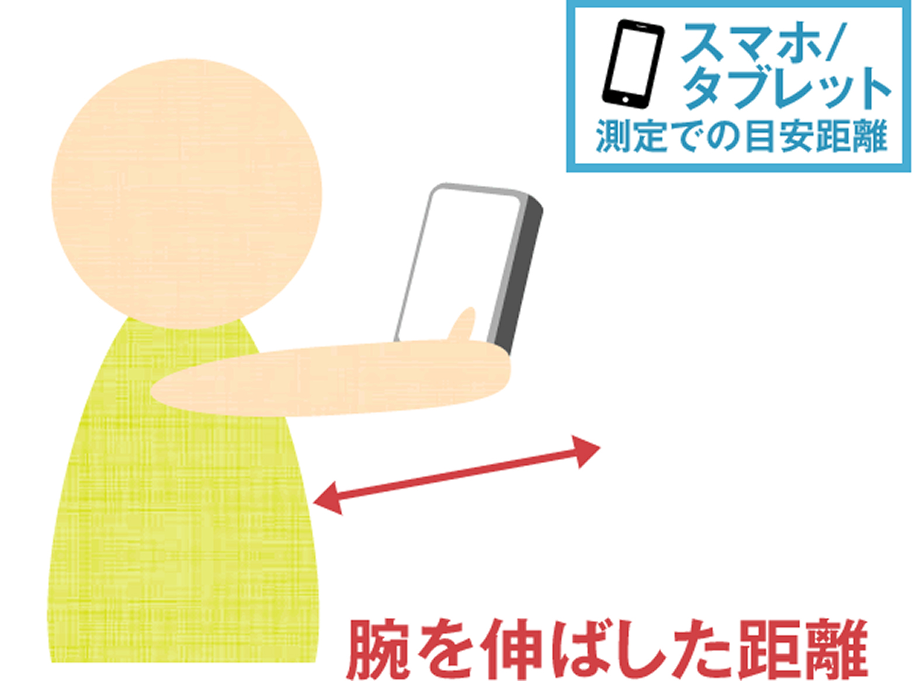
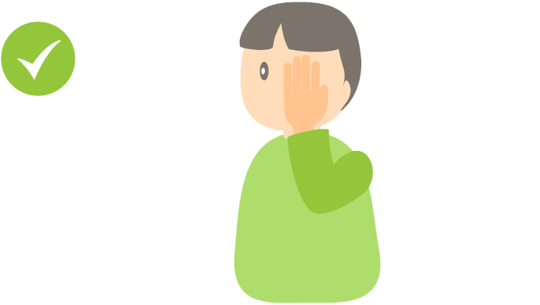
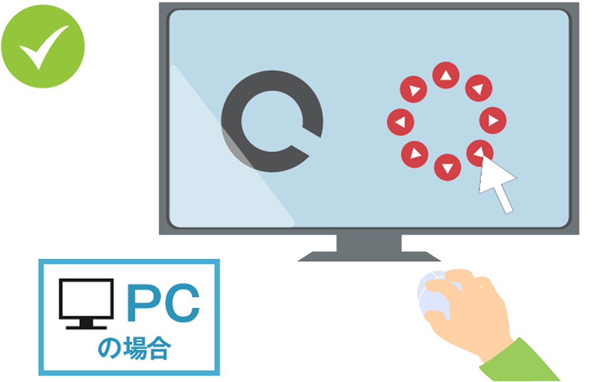
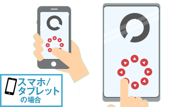
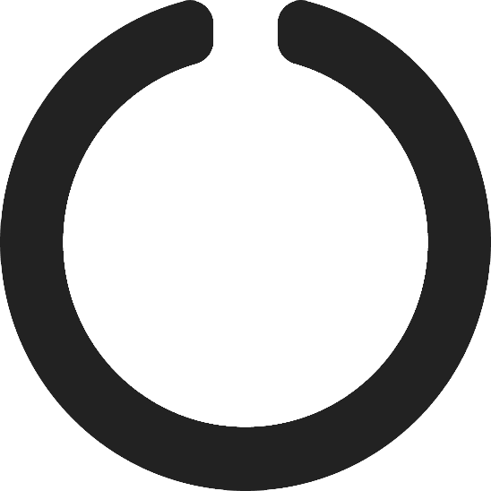
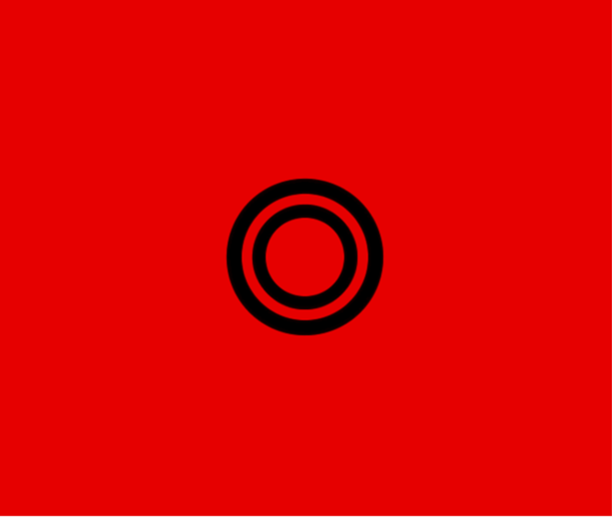
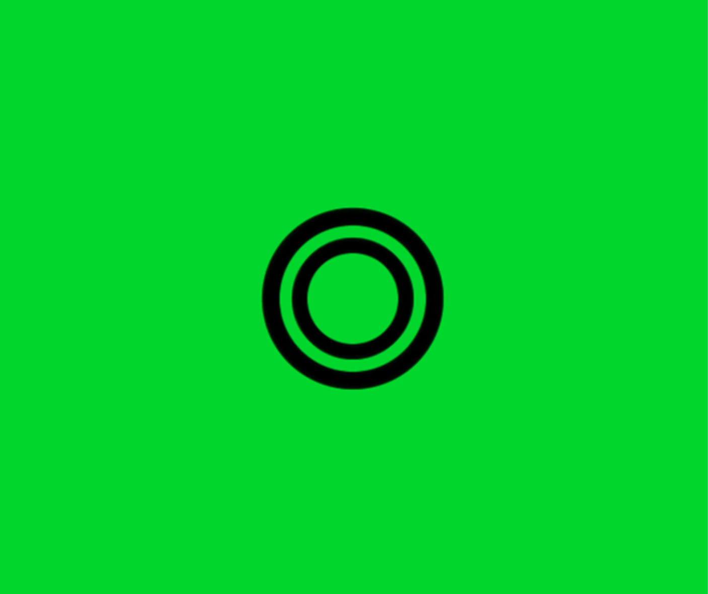

総合検査結果
メガネやコンタクトの使用が必要なレベルです。
両眼とも0.1以下で乱視もあるようですので、目を細める癖が出ているのではないでしょうか。
今すぐ眼科等で検査を受けることをお勧めします。
すでにメガネやコンタクトをご利用されている方も、視力の値としては大きな変化はないかもしれませんが、近視の数値としては進行し続けますので、生活改善と何かしらのケアは必要です。
まずは、眼科等で詳しい検査をして、視力向上可能性判定を行ってみてください。
両眼とも0.1以下で乱視もあるようですので、目を細める癖が出ているのではないでしょうか。
今すぐ眼科等で検査を受けることをお勧めします。
すでにメガネやコンタクトをご利用されている方も、視力の値としては大きな変化はないかもしれませんが、近視の数値としては進行し続けますので、生活改善と何かしらのケアは必要です。
まずは、眼科等で詳しい検査をして、視力向上可能性判定を行ってみてください。
視 力
左
右
測定中
測定中
近 視 / 遠 視
左
右
測定中
測定中
乱 視
左
右
測定中
測定中
※ディスプレイの輝度や解像度により結果が左右される恐れがあります。あくまで参考値とお考えください。
詳細な検査は、眼科を受診されることをお勧めします。
詳細な検査は、眼科を受診されることをお勧めします。
視力検査のご説明
パソコンやスマホ/タブレットの画面で、簡単に視力検査、レッド・グリーンテスト、乱視検査ができます。 まずは、現状把握から始めましょう！
視力検査を行う前に


- 測定距離は、下のイラストを参考にしてください。
- 基本的には裸眼で行ってください。
- 左右、片方の目から順番に測定して下さい。
- ランドルト環（Cマーク）の隙間の開いている方向の矢印をクリックして下さい。
- 力まず、肩の力を抜いてリラックスして測定して下さい。
- 同じ数値を2回成功すると次に進みます。 2回失敗すると測定終了になります。
画面サイズの調整
お使いの環境（PC、スマホ/タブレット）により表示サイズが異なります。
画面の100円硬貨画像と、実物の100円硬貨を照らし合わせて、同じ縮尺になるように拡大/縮小バーで調整してください。
画面の100円硬貨画像と、実物の100円硬貨を照らし合わせて、同じ縮尺になるように拡大/縮小バーで調整してください。
視力の設定
測定を開始する視力を選択してください。
選択したら、最下段の「次へ」ボタンから測定を開始してください。
※可能性として考えられる最も悪い視力からスタートすると、効率良く検査ができます。
選択したら、最下段の「次へ」ボタンから測定を開始してください。
※可能性として考えられる最も悪い視力からスタートすると、効率良く検査ができます。

右目から測定してください。左の目を左手で隠すかつぶって下さい。


ランドルト環（Ｃマーク）の開いている方向（8方向）を、画面にある方向ボタンでタップもしくはマウスでクリックして下さい。
※測定は右目から行ってください。
視力の測定
右目の測定を行います。
ランドルト環（Ｃマーク）の開いている方向（8方向）を、
画面にある方向ボタンでタップもしくはマウスでクリックして下さい。
ランドルト環（Ｃマーク）の開いている方向（8方向）を、
画面にある方向ボタンでタップもしくはマウスでクリックして下さい。
1.0

🢄
🢁
🢅
🢀
🢂
🢇
🢃
🢆
レッド・グリーンテスト
この検査は、必ず裸眼で行ってください。
まずは右目から、視力検査と同じ距離で下の画像を見てください。
赤い背景と緑の背景に書かれた指標のうち、どちらがはっきりと濃く見えますか？
濃く見える画像をクリックしてください。
どちらとも言えない場合は、下のボタンを押してください。
まずは右目から、視力検査と同じ距離で下の画像を見てください。
赤い背景と緑の背景に書かれた指標のうち、どちらがはっきりと濃く見えますか？
濃く見える画像をクリックしてください。
どちらとも言えない場合は、下のボタンを押してください。
右目測定中


レッド・グリーンテスト
この検査は、必ず裸眼で行ってください。
まずは右目から、視力検査と同じ距離で下の画像を見てください。
赤い背景と緑の背景に書かれた指標のうち、どちらがはっきりと濃く見えますか？
濃く見える画像をクリックしてください。
どちらとも言えない場合は、下のボタンを押してください。
まずは右目から、視力検査と同じ距離で下の画像を見てください。
赤い背景と緑の背景に書かれた指標のうち、どちらがはっきりと濃く見えますか？
濃く見える画像をクリックしてください。
どちらとも言えない場合は、下のボタンを押してください。
左目測定中
レッド・グリーンテスト
まずは、右目から始めてください。
視力検査と同じ距離で下の画像を正面から見てください。
下図の放射状に伸びる各線は同じ太さ、濃度で描かれています。
乱視がある場合は線に濃淡や太さのばらつきが見られます。
視力検査と同じ距離で下の画像を正面から見てください。
下図の放射状に伸びる各線は同じ太さ、濃度で描かれています。
乱視がある場合は線に濃淡や太さのばらつきが見られます。
右目測定中
放射状に伸びる各線は同じ太さ、濃度に見える
放射状に伸びる各線の太さ、濃度にばらつきがある
放射状に伸びる各線の太さ、濃度にばらつきがある
レッド・グリーンテスト
まずは、右目から始めてください。
視力検査と同じ距離で下の画像を正面から見てください。
下図の放射状に伸びる各線は同じ太さ、濃度で描かれています。
乱視がある場合は線に濃淡や太さのばらつきが見られます。
視力検査と同じ距離で下の画像を正面から見てください。
下図の放射状に伸びる各線は同じ太さ、濃度で描かれています。
乱視がある場合は線に濃淡や太さのばらつきが見られます。
左目測定中
放射状に伸びる各線は同じ太さ、濃度に見える
放射状に伸びる各線の太さ、濃度にばらつきがある
放射状に伸びる各線の太さ、濃度にばらつきがある
Step 9
THE FINAL STEP OMG
OMG!!!!!!!!!!!!!!!!!!!!!!!!!!!!!!!!!!!!!